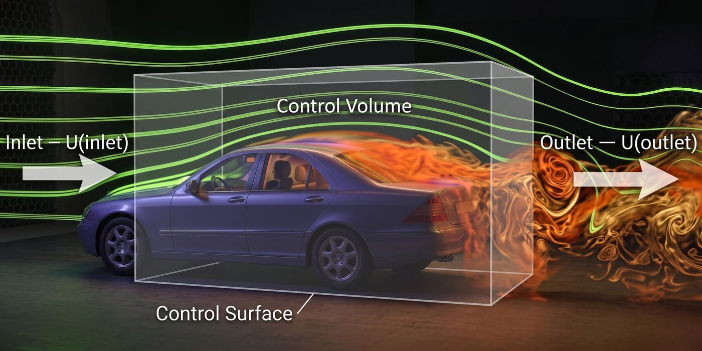
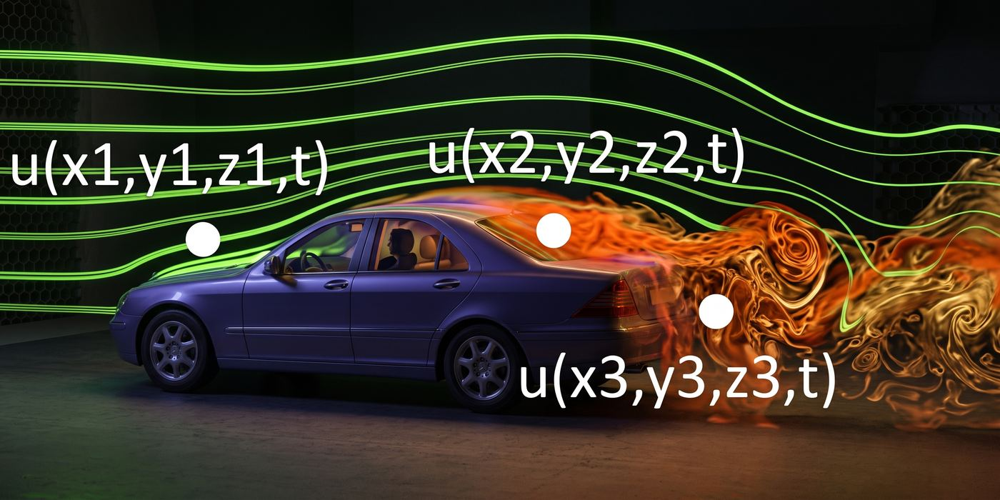
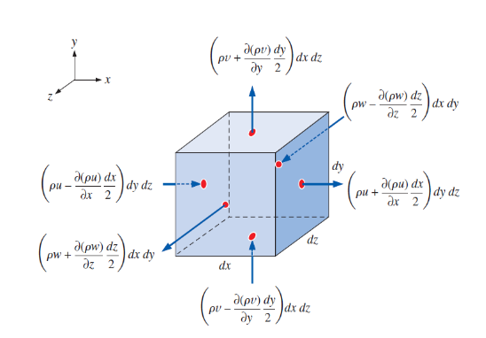
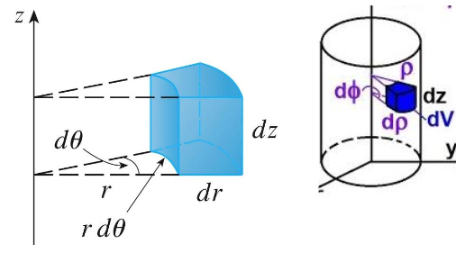
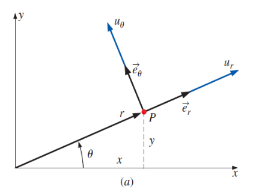
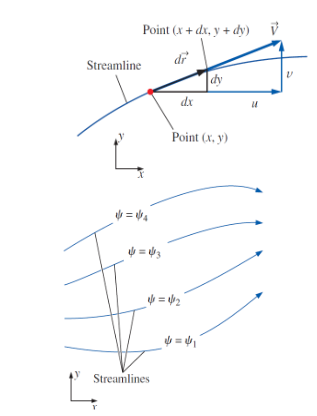
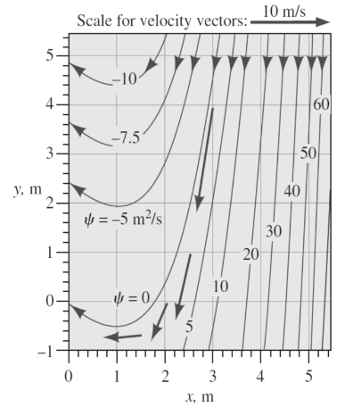
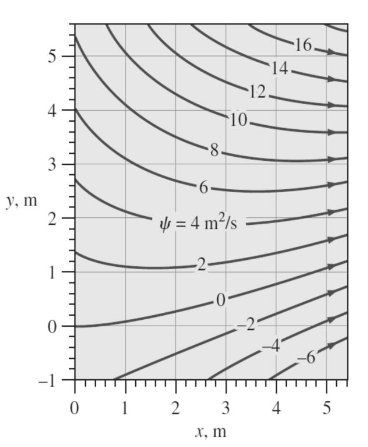

1. Integral vs. Differential — Two Ways to Look at Mass
Quick reminder — explained in the previous chapter
بتحسب الخصائص الكلية (overall) زي الـdrag والـlift، من خلال اللي بيحصل بس عند حدود الـcontrol volume، يعني عند الـcontrol surface. سهلة الحل.

بتحسب الـflow عند كل نقطة بالشكل \(u(x,y,z,t)\)، عشان نطلع بمعرفة تفصيلية عن النظام كله. معقدة الحل.
2. Cartesian Coordinates — The Control Volume & Taylor Expansion
Setting up the infinitesimal elementبدأنا في Section 1 بالـIntegral Form والـDifferential Form. عشان نحصل على الـcontinuity equation نفسها، لازم الأول نعبّر عن المسألة بمكونات السرعة في نظام إحداثيات معين، وأبسط نظام هو Cartesian coordinates \((x,y,z)\). فهنشتق المعادلة من هنا، وبعد ما تتأسس نقدم صيغتها العامة (Section 4)، وبعدها ننتقل لنظام الإحداثيات الأسطواني (Section 5) والحالات الخاصة.
دلوقتي عايزين نوصل من الـIntegral Form اللي هي سهلة، للـDifferential Form. الطريقة إننا ناخد control volume صغير جدًا — صغير لدرجة إنه infinitesimal — بأبعاد \(dx\), \(dy\), \(dz\)، ونطبق عليه نفس معادلة حفظ الكتلة اللي كتبناها قبل كده.
نبدأ من نفس معادلة الـmass balance، لكن دلوقتي مطبقة على العنصر الصغير:
وهي نفس المعادلة اللي ظهرت في القسم الأول (dm_cv/dt = Σṁ_in − Σṁ_out)، بس هنا هنستخدمها على عنصر صغير جدًا بدل جسم كامل.
افرض إن السرعة عند مركز الـcontrol volume في اتجاه \(x\) هي \(u\). السؤال دلوقتي: لو تحركنا نص خطوة (\(dx/2\)) لليمين أو الشمال، السرعة هتتغير إزاي؟
باستخدام Taylor Expansion (تقريب من الدرجة الأولى)، السرعة عند الوجه الشمال (left face) والوجه اليمين (right face) بتتحسب بإضافة أو طرح نص التغيّر:
الفكرة هنا إن السرعة عند مركز العنصر هي \(u\)، ولو تحركنا مسافة صغيرة \(dx/2\) في اتجاه \(x\)، فالسرعة بتتغير بمعدل \(\partial u/\partial x\) لكل وحدة مسافة. فبالتالي التغيّر الكلي عند نص المسافة \(dx/2\) هو \(\frac{\partial u}{\partial x}\cdot\frac{dx}{2}\). نطرحه عشان نرجع للوجه الشمال، ونضيفه عشان نوصل للوجه اليمين. ده أساس كل الاشتقاق اللي جاي.
عشان نحول من سرعة لـmass flow rate، نستخدم العلاقة الأساسية:
ومساحة الوجه في اتجاه \(x\) هي مساحة المستطيل اللي أبعاده \(dy\) و\(dz\):
وبالتالي معدل الكتلة الداخلة من الوجه الشمال (باستخدام \(u_{\text{left}}\) والكثافة \(\rho\) عند نفس الوجه، مع تطبيق Taylor على الحد \(\rho u\) ككل مش على \(u\) لوحدها):
وبنفس المنطق، معدل الكتلة الخارجة من الوجه اليمين:
نفس فكرة الـTaylor Expansion بتتكرر في اتجاهي \(y\) و\(z\)، فبنحصل على ستة حدود كلها — اتنين لكل اتجاه:

💡 What This Part Means
من هنا بنبني الأساس الرياضي للاشتقاق كله. ده بالظبط اللي بيسمح بتحويل مسألة الـcontrol volume الكبير (الصعبة) لمسألة عنصر متناهي الصغر (السهلة رياضيًا، لأنها بتستخدم مشتقات جزئية).
🔑 Key Takeaway
- Taylor Expansion بتدينا قيمة أي كمية (سرعة أو ρu) عند حدود العنصر انطلاقًا من قيمتها في المركز.
- \(\dot m = \rho V A\) هي الجسر اللي بيوصلنا من السرعة للـmass flow rate.
- مساحة كل وجه بتساوي حاصل ضرب البعدين التانيين (مثلاً \(dy\,dz\) للوجه العمودي على \(x\)).
3. Cartesian Coordinates — From Mass Flow Rate to the Differential Form
Summing all six faces and simplifyingبجمع الحدود التلاتة اللي بتدخل من الوجوه "السالبة" (شمال، تحت، خلف):
دلوقتي نرجع لمعادلة حفظ الكتلة الأساسية اللي بدأنا بيها في القسم اللي فات، \(\dfrac{dm_{CV}}{dt} = \sum_{\text{in}}\dot m - \sum_{\text{out}}\dot m\).
لما نعوّض بالحدين اللي حسبناهم، هنلاحظ حاجة مهمة: الحد الأساسي \(\rho u\) (وكذلك \(\rho v\) و\(\rho w\)) بيتكرر في كل من \(\sum\dot m_{\text{in}}\) و\(\sum\dot m_{\text{out}}\) لكن بإشارة متعاكسة — فبيتلغي تمامًا عند الطرح، ويفضل بس حد الـTaylor (المشتقة):
لاحظوا إن \(\rho u\) موجودة في الحدين، مرة بإشارة سالبة (داخل) ومرة بإشارة موجبة (خارج). لما نطرح، \(\rho u - \rho u = 0\)، ويفضل بس حدود المشتقة. ده هو السبب إن النتيجة النهائية بتظهر بس فيها \(\partial(\rho u)/\partial x\) بدون \(\rho u\) نفسها.
وكل حد في المعادلة دي مرتبط بالوجه المقابل له في الرسم التوضيحي.
بما إن \(m_{CV} = \rho \, dx\,dy\,dz\) (الكتلة = الكثافة × الحجم)، فإن:
وبمساواة الطرفين، ثم قسمة الحدين كلهم على \(dx\,dy\,dz\) (لأنها مشتركة وغير صفرية):
أو بنفس المعنى، بنقل كل الحدود لطرف واحد:
💡 What This Part Means
الجزء ده هو قلب الاشتقاق كله. وصلنا خطوة بخطوة من معادلة حفظ الكتلة العامة (التكاملية) لمعادلة تفاضلية بتربط تغيّر الكثافة مع الزمن بتغيّر معدل تدفق الكتلة في التلات اتجاهات.
🔑 Key Takeaway
- \(\sum\dot m_{\text{in}} - \sum\dot m_{\text{out}}\) بيسيب بس حدود المشتقات الجزئية، لأن \(\rho u\), \(\rho v\), \(\rho w\) بتتلغي.
- \(dm_{CV} = \rho\,dx\,dy\,dz\) هي العلاقة اللي بتوصلنا لـ\(\partial\rho/\partial t\).
4. The General Continuity Equation
The compact vector form — "الصيغة العامة في جميع الحالات"اللي عملناه في القسمين اللي فاتوا هو بالظبط اشتقاق الـcontinuity equation في الصيغة التفاضلية بدءًا من الـintegral form. النتيجة اللي وصلنا لها ممكن تتكتب بصيغة أكتر إيجازًا باستخدام del operator \(\vec\nabla\):
المعادلة دي هي الصيغة العامة في جميع الحالات. الوحدة الفيزيائية للمعادلة هي "mass / volume" لكل "Time" — يعني معدل تغيّر الكتلة لكل وحدة حجم مع الزمن. أي حالة خاصة (steady, incompressible, إلخ) هي مجرد تبسيط لنفس المعادلة العامة دي تحت شرط معين.
نقدر كمان نوسّع \(\vec\nabla\cdot(\rho\vec V)\) باستخدام قاعدة الضرب في التفاضل المتجهي: \(\vec\nabla\cdot(\rho\vec V) = \vec V\cdot\vec\nabla\rho + \rho\,\vec\nabla\cdot\vec V\). بإعادة الترتيب، أول حدين بيكوّنوا الـmaterial derivative للكثافة \(D\rho/Dt\):
بالقسمة على \(\rho\)، نوصل للصيغة البديلة:
💡 What This Part Means
الصيغة الطويلة اللي اشتقيناها في Cartesian coordinates هي في الحقيقة حالة خاصة من صيغة أعم وأبسط بصريًا: \(\partial\rho/\partial t + \vec\nabla\cdot(\rho\vec V)=0\).
🔑 Key Takeaway
- الصيغة العامة \(\partial\rho/\partial t + \vec\nabla\cdot(\rho\vec V)=0\) صالحة في كل الحالات — دي نقطة البداية لأي تبسيط لاحق.
- \(D\rho/Dt\) = معدل تغيّر الكثافة وإحنا بنتتبع جسيم سائل معين وهو بيتحرك.
5. Cylindrical Coordinates
Coordinate transformation → the full continuity equationبعد ما اشتقينا الـcontinuity equation في الإحداثيات الكارتيزية (Section 3) وكتبنا صيغتها العامة (Section 4)، ننتقل للنظام التاني: Cylindrical coordinates \((r,\theta,z)\).
في كتير من مسائل الـfluid mechanics — زي الجريان حوالين أسطوانة أو جوه ماسورة — بيكون أسهل بكتير إننا نستخدم cylindrical coordinates \((r,\theta,z)\) بدل \((x,y,z)\)، لأن الشكل الهندسي للمسألة نفسه بيكون أسطواني.
العلاقة بين الإحداثيات الكارتيزية والأسطوانية ("convert between cartesian & cylindrical"):


الـcontinuity equation في الإحداثيات الأسطوانية بصيغتها الكاملة (بتشمل \(\partial\rho/\partial t\)):
الحالات الخاصة (steady / incompressible) هتتطبق على الصيغة الأسطوانية دي بنفس الطريقة اللي بتتطبق بيها على الصيغة الكارتيزية — وده اللي هنشوفه في Section 6.
💡 What This Part Means
بننتقل من صيغة الكارتيزيان للأسطوانية لأن الهندسة الأسطوانية بتظهر كتير في التطبيقات الهندسية (مواسير، أسطوانات، ماكينات دوّارة). الفكرة الرياضية للاشتقاق نفسها زي الكارتيزيان — بس شكل عنصر الحجم اتغيّر لقطاع أسطواني بدل مكعب، وده اللي ولّد حدود الـ\(1/r\) الإضافية.
6. Special Cases: Steady & Incompressible
One common concept — applied to the general, Cartesian, and cylindrical formsنقسّم الحالات الخاصة لتلات حالات — steady الأول، وبعدين incompressible، وبعدين اجتماعهم سوا. الافتراضين مختلفين تمامًا، فكل واحد بيصفّر حد مختلف في المعادلة العامة (Section 4). وهنطبّق كل حالة على الصيغة الكارتيزية (Section 3) والأسطوانية (Section 5) اللي اتشرحوا قبل كده:
لو الجريان steady، يبقى الخصائص مبتتغيرش مع الزمن عند أي نقطة ثابتة، فبالتالي \(\dfrac{\partial \rho}{\partial t}=0\). لكن الكثافة نفسها لسه ممكن تتغير من نقطة لنقطة.
In Cartesian coordinates:
In cylindrical coordinates:
لاحظ إن \(\rho\) فضلت جوه الـdivergence، لأنها مش لازم تكون ثابتة. يعني الـsteady لوحده (في مائع compressible) بيدّينا \(\vec\nabla\cdot(\rho\vec V)=0\) مش \(\vec\nabla\cdot\vec V=0\).
لو الجريان incompressible، يبقى كثافة الجسيم السائل مبتتغيرش وهو بيتحرك، يعني \(\dfrac{D\rho}{Dt}=0\). بالتعويض في الصيغة البديلة (Section 4):
فيفضل بس الحد الأخير، وبما إن \(\rho\) غير صفرية، نقدر نقسم عليها فتظهر النتيجة:
In Cartesian coordinates:
In cylindrical coordinates:
الفرق بين الافتراضين هو في نوع التغيّر اللي بنصفّره: الـsteady بيصفّر \(\partial\rho/\partial t\) (تغيّر الكثافة مع الزمن عند نقطة ثابتة)، أما الـincompressible فبيصفّر \(D\rho/Dt=\partial\rho/\partial t+\vec V\cdot\vec\nabla\rho\) (تغيّر الكثافة وإحنا ماشيين مع الجسيم). عشان كده الصيغة \(\vec\nabla\cdot\vec V=0\) جاية من الـincompressible، ومش جاية من الـsteady.
لو الافتراضين اتحققوا سوا، يبقى \(\partial\rho/\partial t=0\) و\(D\rho/Dt=0\) في نفس الوقت، والمعادلة بتفضل زي ما وصلنا لها في Case 2:
لازم ننتبه إن incompressible مش نفس معنى steady. ممكن يكون عندنا جريان incompressible لكنه unsteady (يعني السرعة بتتغير مع الزمن)، والمعادلة \(\vec\nabla\cdot\vec V=0\) بتفضل صحيحة. وممكن يكون عندنا جريان steady لكنه compressible (زي غاز بيتحرك بسرعة عالية)، وقتها \(\vec\nabla\cdot\vec V\neq 0\) والصيغة الصح هي \(\vec\nabla\cdot(\rho\vec V)=0\). يعني لو الجريان steady بس، مينفعش نستخدم \(\vec\nabla\cdot\vec V=0\).
وبالتالي الحالات التلاتة بتتلخص كده:
| الحالة | General Form | Cartesian | Cylindrical |
|---|---|---|---|
| Steady State | \(\vec\nabla\cdot(\rho\vec V)=0\) | \(\frac{\partial(\rho u)}{\partial x}+\frac{\partial(\rho v)}{\partial y}+\frac{\partial(\rho w)}{\partial z}=0\) | \(\frac{1}{r}\frac{\partial(r\rho u_r)}{\partial r}+\frac{1}{r}\frac{\partial(\rho u_\theta)}{\partial \theta}+\frac{\partial(\rho u_z)}{\partial z}=0\) |
| Incompressible Flow | \(\vec\nabla\cdot\vec V=0\) | \(\frac{\partial u}{\partial x}+\frac{\partial v}{\partial y}+\frac{\partial w}{\partial z}=0\) | \(\frac{1}{r}\frac{\partial(ru_r)}{\partial r}+\frac{1}{r}\frac{\partial u_\theta}{\partial \theta}+\frac{\partial u_z}{\partial z}=0\) |
| Steady + Incompressible | \(\vec\nabla\cdot\vec V=0\) | \(\frac{\partial u}{\partial x}+\frac{\partial v}{\partial y}+\frac{\partial w}{\partial z}=0\) | \(\frac{1}{r}\frac{\partial(ru_r)}{\partial r}+\frac{1}{r}\frac{\partial u_\theta}{\partial \theta}+\frac{\partial u_z}{\partial z}=0\) |
← اسحب لرؤية المزيد →
💡 What This Part Means
كل افتراض بيصفّر حد مختلف في المعادلة العامة، فبيوصّلنا لصيغة مختلفة. الـincompressible لوحده كفاية عشان نوصل لـ\(\vec\nabla\cdot\vec V=0\)، والـsteady مش شرط فيها؛ أما الـsteady لوحده فبيسيب \(\rho\) جوه الـdivergence.
🔑 Key Takeaway
- Incompressible: \(D\rho/Dt=0\) → \(\rho\,\vec\nabla\cdot\vec V=0\) → \(\vec\nabla\cdot\vec V=0\)
- Steady state: \(\partial\rho/\partial t = 0\) → \(\vec\nabla\cdot(\rho\vec V)=0\)
- Steady + Incompressible: \(\vec\nabla\cdot\vec V=0\)
7. Steady, 2-D, Incompressible Flow
The specific case that leads directly into the Stream Functionدلوقتي هنركّز على حالة خاصة جدًا مهمة: جريان steady، two-dimensional، وincompressible في نفس الوقت، في الإحداثيات الكارتيزية. الحالة دي هي اللي هتفتحلنا الباب لفكرة الـStream Function.
في حالة الجريان ثنائي الأبعاد (2D)، مفيش اعتماد على \(z\)، وعادة بيكون \(w=0\):
Two-Dimensional: \(\dfrac{\partial}{\partial z}=0\) وعادة \(w=0\)
Incompressible: \(\rho=\text{constant}\)
بالتعويض في معادلة الاستمرارية في الحالة الـincompressible (من Section 6)، وبإسقاط حد \(z\)، بتبسط لصيغة فيها متغيرين بس:
المعادلة دي بسيطة الشكل، لكنها بتحتوي على مجهولين — \(u\) و\(v\) — في معادلة واحدة بس. ده معناه إن السرعتين مش مستقلتين عن بعض، لازم يحققوا العلاقة دي مع بعض. الفكرة اللي هنبني عليها بعد كده (Stream Function) هي إزاي نعبّر عن \(u\) و\(v\) بدلالة دالة واحدة بس بحيث المعادلة دي بتتحقق أوتوماتيكيًا.
🔑 Key Takeaway
- Steady + 2D + Incompressible (Cartesian) → \(\partial u/\partial x + \partial v/\partial y = 0\)
- معادلة واحدة، مجهولين (\(u,v\)) — علاقة ترابط بين مكونات السرعة.
8. The Stream Function (ψ) — General Concept
Collapsing two unknowns (u, v) into one scalarالرمز \(\psi\) هنا اسمه "stream function" — وهو حل لمشكلة إن عندنا معادلة واحدة بمجهولين. الفكرة: بدل ما نحل لـ\(u\) و\(v\) كمجهولين منفصلين، نعرّف دالة واحدة \(\psi(x,y)\) وناخد مشتقاتها الجزئية عشان نطلع بيهم.
نعوّض بالتعريفين في معادلة الاستمرارية اللي وصلنا لها في Section 7:
وبفك الحدين:
دي مش صدفة رياضية. المشتقة الجزئية المتقاطعة \(\partial^2\psi/\partial x\partial y\) بتساوي دايمًا \(\partial^2\psi/\partial y\partial x\) لأي دالة \(\psi\) ملساء (smooth) — ده قانون رياضي أساسي. فبمجرد ما نعرّف \(u\) و\(v\) بالشكل ده، معادلة الاستمرارية بتتحقق أوتوماتيكيًا وبدون أي شرط إضافي، مهما كانت \(\psi\). ده اللي بيخلي الـstream function أداة قوية جدًا: بدل ما نحل نظام من مجهولين (\(u,v\)) خاضع لقيد (continuity)، بقى عندنا مجهول واحد (\(\psi\)) بدون أي قيد.
عشان نفهم إيه معنى \(\psi\) فيزيائيًا، نبص على streamline — منحنى بيكون دايمًا مماس لمتجه السرعة \(\vec V\) عند كل نقطة عليه. بتعريف الـstreamline، الإزاحة \(d\vec r=(dx,dy)\) عليها لازم تكون موازية لـ\(\vec V=(u,v)\)، يعني:

بإعادة الترتيب:
التعبير \(\frac{\partial \psi}{\partial x}dx + \frac{\partial \psi}{\partial y}dy\) هو بالظبط الـtotal differential لـ\(\psi\):
وبمقارنة الطرفين مع النتيجة اللي وصلنا لها من الـstreamline condition، نستنتج:
بما إن \(d\psi=0\) على طول أي streamline، فإن \(\psi\) ثابتة على طول كل streamline. الـstreamlines المختلفة بتقابل قيم ثابتة مختلفة \(\psi_1,\psi_2,\psi_3,\ldots\) — رسم منحنيات \(\psi=\text{ثابت}\) هو بالظبط رسم الـstreamlines بتاعة الجريان.
💡 What This Part Means
من هنا نوصل لنتيجة أساسية: الـstream function مش مجرد أداة رياضية لتبسيط معادلة الاستمرارية، لكنها كمان بتحمل معنى فيزيائي مباشر — قيمتها ثابتة على كل خط جريان. ده بيربط بين الجزء الرياضي (تعريف ψ عشان يحقق continuity) والجزء الفيزيائي (رسم خطوط الجريان الفعلية).
🔑 Key Takeaway
- \(u=\partial\psi/\partial y\), \(v=-\partial\psi/\partial x\) — بيحققوا continuity أوتوماتيكيًا بسبب تساوي المشتقات المتقاطعة.
- \(d\psi=0\) على طول أي streamline ⟹ ψ ثابتة على كل خط جريان.
9. Stream Function in Different Coordinate Systems
Cartesian 2-D · cylindrical planar/polar · cylindrical axisymmetricبعد ما فهمنا الـstream function كفكرة عامة في Section 8 (من خلال الحالة الكارتيزية الثنائية)، نشوف دلوقتي شكل علاقاتها في كل نظام إحداثيات. الحالة الكارتيزية اتعرفت قبل كده، أما في الـcylindrical فيه حالتين: planar/polar وaxisymmetric. شروط الحالتين دول وشكل الـcontinuity equation لكل واحدة هيتشرحوا في Section 10.
زي ما عرفناها في Section 8:
في حالة الـplanar/polar:
وفي حالة الـaxisymmetric:
لاحظوا إن علامة السالب بتتنقل بين \(u_r\) و\(u_z\) حسب الحالة المستخدمة — في الـplanar/polar، \(u_\theta = -\partial\psi/\partial r\)، لكن في الـaxisymmetric، \(u_r = -\dfrac{1}{r}\dfrac{\partial\psi}{\partial z}\) هي اللي فيها السالب بدل \(u_z\). لازم الانتباه لأي فورم إحنا شغالين بيه عشان منلخبطش الإشارات.
🔑 Key Takeaway
- Stream function relations بتختلف شكلها حسب كوننا في planar/polar أو axisymmetric — انتبه للإشارات.
10. Cylindrical-Coordinate Special Cases
2-D planar/polar → axisymmetricدلوقتي نرجع للـcylindrical continuity equation (Section 5) ونشوف الحالتين الخاصتين اللي استخدمناهم في علاقات الـstream function في Section 9: الجريان ثنائي الأبعاد planar/polar، والجريان axisymmetric. (الافتراض هنا إن الجريان incompressible، زي ما في علاقات الـstream function.)
نبدأ من الصيغة المبسطة في حالة الجريان ثنائي الأبعاد (planar/polar):
معنى Axisymmetric: "حركة منتظمة لا يوجد تغيّر في θ". يعني في الجريان المتماثل حول المحور (axisymmetric)، الخصائص مبتتغيرش مع الزاوية \(\theta\) — الجريان "منتظم" حوالين المحور بحيث مفيش أي اعتماد على الاتجاه الزاوي.
\(\partial(\cdot)/\partial\theta = 0\) لكل الخصائص.
وبالنسبة لحالة الـaxisymmetric تحديدًا:
علاقات الـstream function اللي بتقابل كل حالة من الحالتين دول موجودة في Section 9، ومتجمعة كلها في جدول واحد في Section 11.
11. Stream Function — Summary of All Forms
Cartesian, planar/polar, and axisymmetric — gathered togetherبعد ما اشتقينا علاقات الـstream function في الإحداثيات الكارتيزية (Section 8)، وفي الإحداثيات الأسطوانية بحالتيها (Section 9 و10)، نجمعهم في جدول ملخص واحد:
| Coordinate System | Continuity Equation | Stream Function Relations |
|---|---|---|
| Cartesian (2-D) | \(\dfrac{\partial u}{\partial x}+\dfrac{\partial v}{\partial y}=0\) | \(u=\dfrac{\partial\psi}{\partial y}\ ,\quad v=-\dfrac{\partial\psi}{\partial x}\) |
| Cylindrical — planar / polar (2-D) | \(\dfrac{\partial(ru_r)}{\partial r}+\dfrac{\partial u_\theta}{\partial \theta}=0\) | \(u_r=\dfrac{1}{r}\dfrac{\partial\psi}{\partial \theta}\ ,\quad u_\theta=-\dfrac{\partial\psi}{\partial r}\) |
| Cylindrical — axisymmetric | \(\dfrac{1}{r}\dfrac{\partial(ru_r)}{\partial r}+\dfrac{\partial u_z}{\partial z}=0\) | \(u_r=-\dfrac{1}{r}\dfrac{\partial\psi}{\partial z}\ ,\quad u_z=\dfrac{1}{r}\dfrac{\partial\psi}{\partial r}\) |
← اسحب لرؤية المزيد →
الجدول ده مش معلومة جديدة — هو تجميع لكل اللي اشتقيناه قبل كده في مكان واحد عشان الطالب يقدر يرجعله بسهولة وقت حل المسائل، بدل ما يدور في كل قسم على حدة.
🔑 Key Takeaway
- لازم تحدد الإحداثيات (Cartesian / Cylindrical) والحالة (planar-polar / axisymmetric) الأول قبل ما تطبق علاقات ψ.
- الإشارة السالبة بتتنقل مكانها حسب الحالة — مراجعة الجدول بتفادي الغلط في الإشارات.
12. Worked Examples
Applied in order- تطبيق شرط الـincompressible continuity للجريان الـincompressible (Section 6)، لازم يتحقق \(\vec\nabla\cdot\vec V = \dfrac{\partial u}{\partial x}+\dfrac{\partial v}{\partial y}+\dfrac{\partial w}{\partial z}=0\).
-
اشتقاق كل مكون سرعة
\[ \frac{\partial u}{\partial x} = 2axy \qquad \frac{\partial v}{\partial y} = 2bxy \qquad \frac{\partial w}{\partial z} = 0 \]
-
التعويض في شرط الـdivergence
\[ 2axy + 2bxy + 0 = 0 \quad\Longrightarrow\quad 2xy(a+b) = 0 \]عشان الشرط ده يتحقق لكل \(x,y\) (مش بس نقط معينة)، لازم \(a+b=0\).
-
(a) تطبيق تعريف الـstream function
باستخدام \(u=\partial\psi/\partial y\) و\(v=-\partial\psi/\partial x\) من Section 8:
\[ u = \frac{\partial \psi}{\partial y} = b \qquad\text{and}\qquad v = -\frac{\partial \psi}{\partial x} = -3ax^2 - c \]
- (b) التحقق من الـcontinuity \(\dfrac{\partial u}{\partial x}=0\) (لأن \(u=b\) ثابتة) و\(\dfrac{\partial v}{\partial y}=0\) (لأن \(v\) مش دالة في \(y\)). مجموعهم \(0+0=0\) — الـcontinuity متحققة تلقائيًا، بالظبط زي ما ضمنه تعريف الـstream function في Section 8.
- (c) شكل الـstreamlines رسم منحنيات \(\psi=\text{ثابت}\) في الربع العلوي الأيمن بيدي النمط الموضح تحت — الجريان بيتسارع من الشمال لليمين مع انحناء بسيط لأعلى.

\(u = ax+b\) \(v = -ay+cx\) \(a=0.50\ \text{s}^{-1}\), \(b=1.5\ \text{m/s}\), \(c=0.35\ \text{s}^{-1}\)
-
Step 1 — البدء من تعريف u = ∂ψ/∂y والـintegration بالنسبة لـy
بما إن \(u=\partial\psi/\partial y\)، وعندنا \(u=ax+b\)، إذن:
\[ \frac{\partial \psi}{\partial y} = ax+b \]نعمل integration للطرفين بالنسبة لـ\(y\) (لأن المشتقة كانت بالنسبة لـ\(y\)):\[ \int \partial\psi = \int (ax+b)\,dy \]\[ \psi = axy + by + f(x) \]
-
Step 2 — ليه كتبنا f(x) بدل C؟
هنا نقطة مهمة جدًا لازم نفهمها كويس: لما بنعمل integration جزئي بالنسبة لـ\(y\) بس (مش بالنسبة للمتغيرين)، أي "ثابت" بالنسبة لعملية التكامل دي ممكن يكون في الحقيقة دالة في \(x\) — لأن \(x\) كان بيتعامل معاها كأنها ثابتة أثناء التكامل بالنسبة لـ\(y\). فلو كتبنا \(C\) بس (ثابت عددي)، هنفقد أي جزء من \(\psi\) بيعتمد على \(x\) لوحده. عشان كده لازم نكتبها \(f(x)\) — دالة مجهولة في \(x\) هنحددها في الخطوة الجاية.
-
Step 3 — استخدام v = -∂ψ/∂x لإيجاد f(x)
نشتق الـ\(\psi\) اللي وصلنا لها بالنسبة لـ\(x\):
\[ \frac{\partial \psi}{\partial x} = ay + f'(x) \]ومن المعطى \(v=-ay+cx\)، وبما إن \(v=-\partial\psi/\partial x\)، إذن \(\partial\psi/\partial x = -v\):\[ \frac{\partial \psi}{\partial x} = -v = -(-ay+cx) = ay - cx \]
-
Step 4 — مساواة التعبيرين لـ ∂ψ/∂x وحل f'(x)
عندنا الآن تعبيرين لنفس الكمية \(\partial\psi/\partial x\)، نساويهم:
\[ ay + f'(x) = ay - cx \]حد \(ay\) بيتلغي من الطرفين، فيتبقى:\[ f'(x) = -cx \]
-
Step 5 — إيجاد f(x) بالـintegration
نعمل integration للطرفين بالنسبة لـ\(x\):
\[ f(x) = -\frac{cx^2}{2} + C \]دلوقتي \(C\) بقت فعلاً ثابت عددي حقيقي، لأن التكامل ده كان بالنسبة لمتغير واحد (\(x\)) بس.
-
Step 6 — تجميع النتيجة النهائية
نرجع نعوض \(f(x)\) في التعبير الأصلي لـ\(\psi\) من Step 1:
\[ \boxed{\ \psi = axy + by - \frac{cx^2}{2} + C\ } \]وبوضع \(\psi=\text{ثابت}\) وحل المعادلة بالنسبة لـ\(y\)، نطلع بمعادلة الـstreamlines مباشرة:\[ y = \frac{\psi + cx^2/2}{ax+b} \]

💡 What This Part Means
الأمثلة التلاتة دي بتطبق بالترتيب كل الأدوات اللي اشتقيناها: Example #1 بيطبق شرط الـincompressibility مباشرة، Example #2 بيطبق تعريف الـstream function من اتجاه واحد (من ψ لـu,v)، وExample #3 (الأهم) بيطبقه من الاتجاه المعاكس (من u,v لـψ).
🔑 Key Takeaway
- لازم دايمًا تتأكد من f(x) بتحقيق الشرط التاني (من v) قبل ما تعتبر الحل نهائي.
13. Practice Questions
Test your understanding — solutions hidden until you check themبدءًا من ميزان الكتلة التكاملي المطبق على عنصر تفاضلي \(dx\,dy\,dz\) (Section 2-3)، بعد Taylor Expansion عند كل وجه وإلغاء الحدود من الدرجة الصفرية، نوصل لـ:
بالصيغة المتجهية: \(\dfrac{\partial \rho}{\partial t}+\vec\nabla\cdot(\rho\vec V)=0 \Rightarrow\) "mass per unit volume" ÷ "time." فيزيائيًا: معدل تراكم الكتلة عند نقطة معينة يساوي سالب صافي تدفق الكتلة الخارج من حواليها.
الافتراضين بيوصلوا لنفس الصيغة النهائية:
الأهم إنك تفهم إنهم مش نفس الشرط: incompressible معناها \(\rho\) ثابتة على طول مسار الجسيم (\(D\rho/Dt=0\))، لكن ده متضمنش إن السرعة نفسها ثابتة مع الزمن. الجريان ممكن يكون incompressible و unsteady في نفس الوقت. هنا بما إن الاتنين مفروضين سوا، فالمعادلة بترجع لنفس الصيغة \(\vec\nabla\cdot\vec V=0\) لأن كل الحدود اللي فيها \(\partial\rho/\partial t\) أو \(D\rho/Dt\) بتتلغي في الحالتين.
(a) نتحقق من \(\partial u/\partial x + \partial v/\partial y = 0\):
الـcontinuity متحققة.
(b) باستخدام \(u = \partial\psi/\partial y = 2x\)، نكامل بالنسبة لـ\(y\):
نشتق بالنسبة لـ\(x\) ونطابق مع \(v=-\partial\psi/\partial x=-2y\):
إذن \(\psi = 2xy + C\) — وده نمط الـstreamlines الكلاسيكي لجريان نقطة الركود (stagnation point flow).